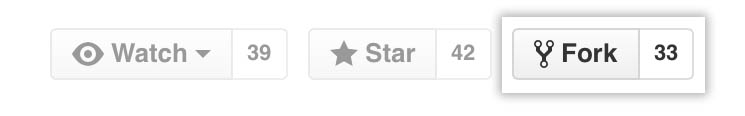

Making your own copy (fork) of ODL¶
You need to do this only once. The instructions here are very similar to the instructions at http://help.github.com/forking/ — please see that page for more detail. We're repeating some of it here just to give the specifics for the ODL project, and to suggest some default names.
Set up and configure a GitHub account¶
If you don't have a GitHub account yet, go to the GitHub page and create one.
After that, you need to configure your account to allow write access — see the "Generating SSH keys" help on the GitHub Help pages.
Create your own forked copy of ODL¶
Log into your GitHub account.
Go to the ODL repository page at ODL GitHub.
Click on the fork button:
Now, after a short pause and some "Hardcore forking action", you should find yourself at the home page for your own forked copy of ODL.